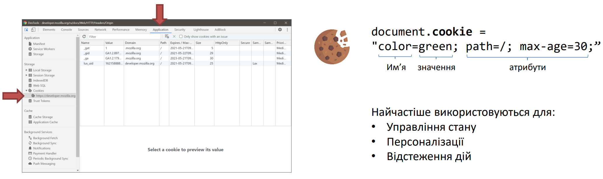

Cookies – невеликий фрагмент даних, який зберігається у браузері. Веббраузер відправляє ці дані щоразу, коли виконує запит на сайт, з якого було отримано cookie. Обмеження обсягом даних – 4Кб.
Найчастіше cookie використовуються для авторизації користувача. Коли він заходить на закриту частину сайту, сервер перевіряє наявність спеціального значення, яке зберігається в cookie. Якщо цього значення немає, користувача перенаправляють на сторінку входу на сайт, якщо значення є – показують вміст закритої частини сайту.
Якщо користувач, потрапивши на сторінку входу, вводить правильний логін та пароль (користувач з таким логіном та паролем знаходиться в базі), тоді сервер повертає користувачеві cookie авторизації, що зберігається в пам'яті браузера. При кожному наступному запиті на сервер цей cookie буде частиною запиту і сервер розумітиме, що користувач виконав вхід на сайт, і що йому можна відображати закриті сторінки.
Cookie передається на сервері як HTTP-заголовок.
Значення одного cookie не повинно перевищувати 4Кб і на один домен більшість браузерів дозволяють створювати близько 20 cookie.
Cookie не призначені для зберігання великих даних і більше підходять для відстеження ідентифікатора користувача під час переходів на різні сторінки сайту або збереження незначних блоків даних
Cookie є рядком, що складається з ключів і значень, розділених крапкою з комою
| Атрибут | Опис |
| path | вказує сторінки, на яких буде працювати цей cookie Наприклад, '/', '/home', '/admin/user’ |
| max-age | Час життя у секундах |
| expires | Дата, коли cookie має бути видалено. Наприклад, 216 May 2025 5:15:05 GMT |
| samesite | Налаштування необхідне для захисту від уразливості CSRF. Не підтримується старими браузерами (до 2017 року). Можливі значення strict, lax чи none |
| secure | Cookie буде надсилатись на сервер лише по HTTPS. |
| httpOnly | Cookie використовуються лише для запитів HTTP. Отримати доступ через JS неможливо. |
document.cookie = "color=green; path=/; max-age=30;"
назва color, значення – green,
відправлятиметься на сервер при запитах до будь-якої сторінки та видаляється з пам'яті
через 30 секунд після створення.
Cookie можуть містити лише текстові значення і для правильного подальшого читання вони повинні бути закодовані за допомогою методу encodeURIComponent. При читанні раніше закодованого значення використовується метод decodeURIComponent.
encodeURIComponent — метод кодування рядка в компонент, який буде використовуватися в URI. Цей метод замінює всі символи, крім символів латинського алфавіту, цифр і символів _ . ! ~ * ' ( )
Метод використовується для запобігання некоректним запитам, наприклад:
У другому рядку символ = був замінений на %3D, оскільки цей символ використовується для визначення значення для ключа, у певних ситуаціях це може вплинути на правильне розпізнавання ключа та його значень.
Web Storage API – надає доступ до інструментів збереження ключ/значення у пам'яті браузера. Є два варіанти сховища – localStorage та sessionStorage. Ліміт зберігання даних 5+ Мб (відрізняється у різних браузерах).
Origin (джерело) – джерело, з якого здійснюється завантаження вмісту. Включає протокол, ім'я хоста, порт. Наприклад, http://localhost:88, https://itvdn.com, http://example.com, https://example.com. Усі ці значення належать до різних джерел. Браузер створює сховище окремо для кожного джерела за умови, що з джерела було отримано код, який звернувся до вебсховища.
| sessionStorage | localStorage | |
| Час життя | Поки відкрита сторінка | Без обмеження |
| Область видимості | Поточна сторінка | Усі сторінки джерела |
JSON (JavaScript Object Notation) — формат зберігання даних, що базується на JavaScript. Застосовується для зберігання та передачі даних між сервером та клієнтом і не залежить від мови програмування
JSON.stringify(object) може використовуватися для перетворення об'єкта або масиву в формат JSON. Для перетворення значення з формату JSON на об'єкт використовується метод JSON.parse(json_string).
Оскільки вебсховище може працювати лише з рядковими значеннями, при збереженні об'єктів може знадобитися використання цих методів.
Отримати доступ до cookies та web storage можна за допомогою інструментів розробника у вкладці Application.